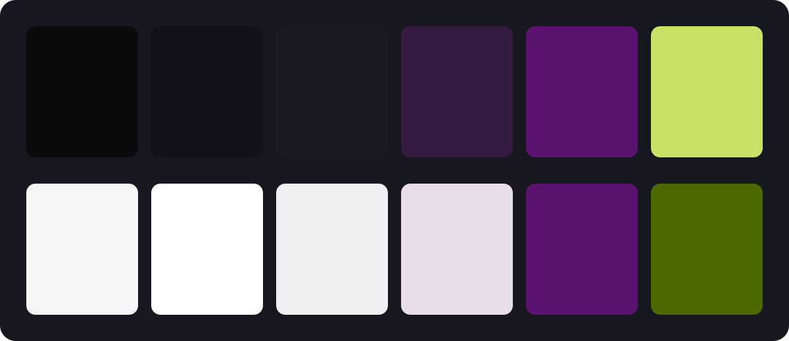

Code Villain gets a face
Code Villain had three products and no look. Forge was indigo, Layer was lavender, the homepage was a test font matched off a generated picture. Today that ended. The whole studio now draws from one place: brand/ and design/ in the vault.
Type
Four pairings went up against the test font. Code Villain picked the boldest: Grenze Gotisch, a gothic display face, for the big titles, and Atkinson Hyperlegible Next for everything read or clicked. The gothic is the costume. Atkinson is the person inside it. Grenze never goes below 28px and never sets a paragraph.
Colour
Nightshade stays: night #0A0B0D, cloak violet, poison chartreuse. What changed is how much of it shows. Grey does the work now. The violet is held to the strength of a grey, and the chartreuse got three jobs and no more: the focus ring, one brand moment per surface, and small live dots like “agent running”. Links are ink, bold, underlined.
There is a day mode too, for the apps. By day the chartreuse darkens, because bright poison on white is 1.4:1 and nobody can read that.

Every surface reads the same names. An app switches to day with one attribute:
/* design/tokens/color.css, generated from color.json */
[data-theme="day"] {
--bg: #F5F5F7;
--panel: #FFFFFF;
--primary: #E8DEEB;
--accent: #4C6A00;
}The button
Five directions, one shape: 28px, 13px semibold, no border. The winner is a violet tone at grey strength. In an issue, the title reads first, then the text, then the button. As it should.
The mark
Four concepts: a strike, an iron mask, a seal, a hood. The strike won. Twenty-five variants later, the bar sits low and heavy behind a gothic V, cut where the letter crosses. Forge, Layer and Caster will each wear their initial the same way.

The cut is one mask. The V, drawn again with a thick stroke, punches a gap in the bar wherever the two cross:
<mask id="cut">
<rect width="200" height="200" fill="#fff"/>
<use href="#v" stroke="#000" stroke-width="14"/>
</mask>
<rect y="108" width="200" height="15" fill="#C9E265" mask="url(#cut)"/>What it cost
One day, a dozen studies, and a rule written down for every decision, so the apps can catch up without asking. The rest is in the record.